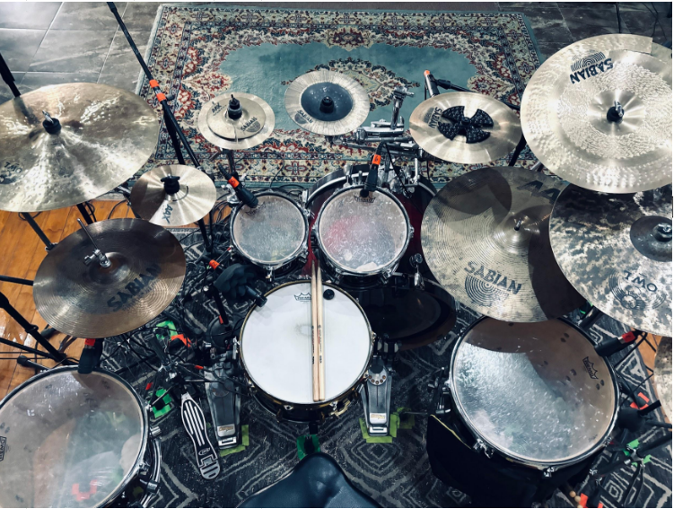
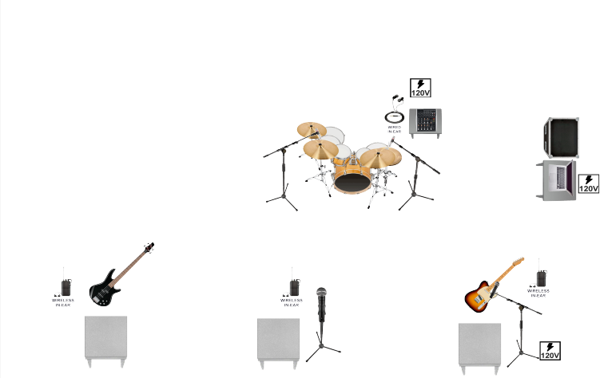

BACKLINE
- Kick 22"
- Rack Tom 10"
- Rack Tom 12"
- Floor Tom 14" con patas
- Floor Tom 16" con patas
- 5x Atriles reforzados con boom
- Mesa o Stand reforzado para consola y electrónicos
- 2x Boom stand para overheads
- 2x Boom stand para micrófono de voces
- 1x Boom stand para micrófono de tarola
- 3x Plataformas/risers pequeños al frente del escenario
- 1x Ventilador

INPUT LIST
| # | INPUT | MIC | STAND |
|---|---|---|---|
| 1 | KICK | TRIGGER | |
| 2 | SNARE | SM57 | BOOM |
| 3 | TOMS L | TRIGGERS | |
| 4 | TOMS R | TRIGGERS | |
| 5 | OH L | C-2 | BOOM |
| 6 | OH R | C-2 | BOOM |
| 7 | BASS | ||
| 8 | GTR 1 | ||
| 9 | KEYS L | ||
| 10 | KEYS R | ||
| 11 | VOX 1 | JZ H100 | BOOM |
| 12 | VOX 2 | SM57 | BOOM |
| 13 | FX L | ||
| 14 | FX R | ||
| 15 | TIMECODE | ||
| 16 | GTR 2 |
STAGE PLOT

CAMERINOS
- Un cuarto para músicos y crew
- Internet
- Dos sillones u 8 sillas
- Una mesa
- Conexiones de electricidad
- Extensión con multicontacto
- Hielera o refrigerador
- Un paquete de pañuelos desechables
- Un paquete de toallas húmedas
- 4x Toallas faciales blancas o negras
CATERING
- 24x Botellas de agua de 250 ml a temperatura ambiente
- 6x Cocas sin azúcar
- 3x Monsters regular
- 24x Cerveza Ultra
- Café soluble, tetera eléctrica, vasos para café
- Frutas variadas (manzana, mandarina, plátano, etc)
- Bolsa grande de cacahuates japoneses
- Bolsa grande de sabritas amarillas
- Vasos y platos desechables
- Servilletas
CONTACTO
- thisisafterglow@gmail.com
-
Coordinador de Producción
Diego Ruso